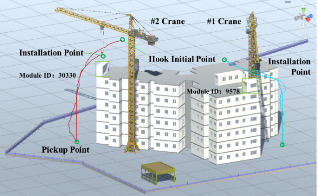

Dual-tower-crane path planning in modular construction模块化施工中的双塔吊路径规划
An ISARC 2026 conference paper on coordinated path planning for two tower cranes sharing a modular-construction site. Reinforcement learning plans the lifting paths in a BIM-based Unity environment while avoiding collisions between the cranes and their loads.
ISARC 2026 会议论文，研究模块化施工现场中两台塔吊在共享空间内的协同路径规划：在基于 BIM 的 Unity 环境中用强化学习规划吊运路径，并避免两台塔吊及其吊物之间的碰撞。
Role:个人贡献： Fourth author.第四作者。

Overview概览
BIM-to-Unity worksiteBIM 到 Unity 的施工现场
The site is modelled in Revit, exported as IFC and imported into Unity, with crane kinematics and an optimised bounding-box collision check.
施工现场在 Revit 中建模，以 IFC 导入 Unity，配合塔吊运动学模型与优化的包围盒碰撞检测。
Staged curriculum learning分阶段课程学习
The dual-crane task is split into pathfinding, obstacle avoidance and cooperative manipulation, learned step by step with PPO and imitation learning.
把双塔吊任务分解为寻路、避障与协同作业，结合 PPO 与模仿学习逐阶段训练。